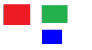

Al mezclar los colores primarios de la luz, que son rojo, verde y azul (RGB por sus iniciales en ingles: Red, Green, Blue), estamos en presencia del sistema de color aditivo
En teoria todos los colores posibles pueden ser creado por la mezcla de estas tres luces de color y se les conoce como el espectro de color. En caso que ningun color de luz este presente, se percibe el negro. Los colores primarios de luz tienen aplicacion en los monitores de un ordenador, televisores, proyectores de video y todos aquellos sistemas que utilizan combinaciones de materiales que fosforecen en el rojo, verde y azul.
Se debe tener en cuenta que solo unos colores "primarios" fictivios se pueden lelgar a conseguir todos los colores posibles. EStos colores primarios son conceptos idealizados utilizados en modelos de color matematicos que no representan las sensaciones de color reales o incluso los impulsos nerviosos reales o procesos cerebrales.